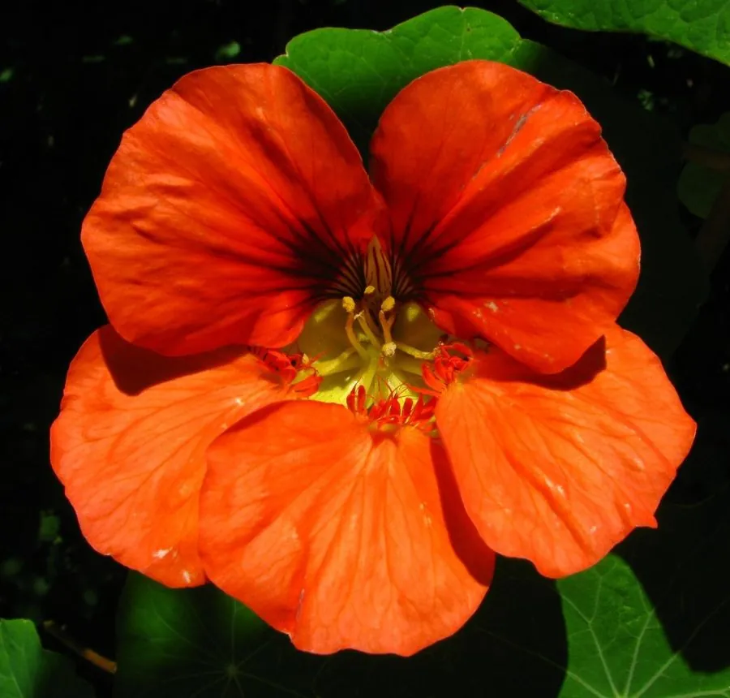

花卉与草本 · 植物界
旱金莲 Tropaeolum majus

旱金莲科一年生蔓生草本，叶片圆盾形似荷叶、花橙黄明艳，花与嫩叶可食，原产南美安第斯山区，花叶均可食用。
- 分类
- 门被子植物门纲木兰纲目十字花目科旱金莲科属旱金莲属
- 栖息环境
- 南美安第斯山区的凉爽坡地，喜凉爽、阳光充足
- 地理分布
- 原产南美洲安第斯山区，世界各地广泛栽培，中国各地庭园常见
- 保护级别
- 暂无评估
物种志
旱金莲为旱金莲科旱金莲属一年生蔓生草本，茎柔软、匍匐或攀援，长 1–3 米。叶片互生，圆形盾状，形似小荷叶，叶柄着生于叶片中央，边缘波状。花单生叶腋，花瓣 5 枚，有橙、黄、红等色，后方一枚花瓣有长距，花期 6–10 月；果实为瘦果。
旱金莲原产南美洲安第斯山区，喜凉爽、阳光充足和湿润的环境，不耐酷热，盛夏生长变弱。它的花和嫩叶带类似芥末的辛辣味，可拌沙拉或作装饰，花蕾和未成熟的果实还可腌制成类似酸豆的调味品。旱金莲蔓生性强，适合种在花坛边缘、篱笆旁或垂吊花盆中，让枝条自然垂挂；栽培以播种为主，也可在春季扦插，蔓生枝条生长很快。
形态与习性
- 株高蔓长 1–3 米，茎匍匐或攀援
- 花期6–10 月，单朵花有长距
- 果期8–10 月，瘦果
- 光照喜充足阳光，夏季需适度遮阴
- 水分喜湿润，忌积水
- 土壤疏松肥沃、排水良好的壤土
- 繁殖以播种为主，也可扦插
- 主要用途花坛垂吊观赏、花叶食用
趣味知识
- 旱金莲的叶片圆盾形、叶柄长在叶片中央，形似小荷叶。
- 它的花和嫩叶带类似芥末的辛辣味，可拌沙拉食用。
- 未成熟的果实腌渍后可作酸豆的代用品。
- 旱金莲后方一枚花瓣有细长的距，是识别它的特征之一。